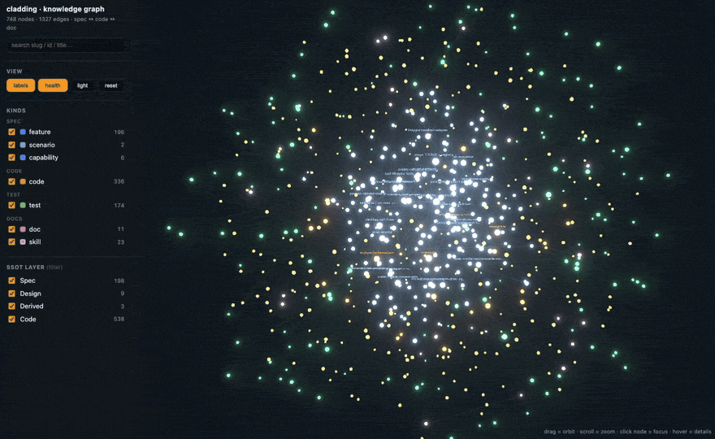

English · 한국어
cladding
기업이 AI에게 코딩을 맡기려면 세 가지가 필요하다 —
믿을 수 있고, 추적되고, 규모가 커져도 흔들리지 않아야 한다. cladding이 그 셋을 만든다.
호스트 LLM(Claude Code · Codex · Gemini · Cursor)을 감싼다: 일을 시작하기 전엔 프로젝트의 의도를 넣어 주고, 마친 후엔 41개 검출기와 15단계 게이트로 결과를 검증한다.

이 루프가 노리는 것은 하나 —
AI의 "다 됐습니다"를 말이 아니라 증명으로 만드는 것이다.
그래서 AI가 짠 코드를 사람이 짠 코드만큼 믿고 내보낼 수 있다.
cladding은 자기 자신도 cladding으로 만든다 — 기능 254개 중 251개가 같은 게이트를 통과했고, Ironclad 표준을 L4로 구현한 첫 사례다.
나간 것은 기록에 남는다 — 무엇을 검증했는지는 커밋된 내용에 새겨지고, 누가·언제는 로컬 세션 로그에, 왜는 스펙에 남는다.
무엇이 달라지나
같은 상황에서 일반 AI 코딩 환경과 cladding 환경의 동작 차이.
| 상황 | 일반 AI 코딩 | cladding |
|---|---|---|
| 코드가 spec과 어긋날 때 | 리뷰에서 발견하면 수정 | 편집 직후 자동 감지(알림) · 어긋난 채로는 "완료"가 통과 못 함 |
| AI가 "다 됐다"고 할 때 | 말을 믿는 수밖에 | 게이트 GREEN일 때만 done 획득 |
| 세션을 실패 상태로 끝낼 때 | 그대로 종료, 다음에 잊힘 | 종료를 한 번 막고 수리 카드 인계 |
| 두 명이 동시에 feature 추가 | merge conflict | hash-8 ID · 파일 분리 → 충돌 0 |
| AI가 짠 코드를 누가 검증? | 작성한 AI가 자기 검증 (위험) | 구현을 못 보는 채점자 + 기계 관문 |
| AI 도구를 바꿀 때 | 도구마다 재구성 | 1 spec → 4 host 자동 연결 |
cladding이 호스트 LLM을 감싸는 방식
- 필요한 의도만 — 작업할 기능의 왜·관련 기능·검증 기준만 (전체 스펙을 덤프하지 않는다)
- 프로젝트 지도 주입 — 기능 수·진행 상황·마지막 검증 결과를 대화를 시작할 때마다 넘겨준다 (이제 눈으로도 볼 수 있다 ↓)
- 팀 규칙 적용 — 팀이 합의한 금지·선호 패턴을 매번 표준 지시로
후 — 결과를 검증한다: 15단계 게이트 · 41개 어긋남 검출기 · 그리고 구현을 못 보는 채점자 — 구현을 읽을 도구 없이 산출물을 스펙과 대조하는 에이전트라, 자기가 쓴 것에 도장을 찍어 줄 수 없다.
실시간 개입(지도 주입 · 즉시 차단 · 종료 차단)은 Claude Code에서 전부 동작한다. Codex · Gemini · Cursor에서는 같은 검증을 대화 속 도구 호출과 git·CI 관문으로 수행한다.
done은 선언이 아니라 획득이다
AI 코딩의 고질병은 "다 됐습니다" 가 검증 없이 선언되는 것이다. cladding에서 feature의
status: done은 쓰는 값이 아니라 얻는 값이다.

한계도 그대로 공개한다: 즉시 차단이 못 보는 우회 경로가 존재하며, 그 경우는 사후 검증(관문·어긋남 검사)이 잡는다. 즉시 차단이 1차 방어선, 사후 검증이 2차 방어선이고 어느 쪽도 단독 보증이 아니다.
프로젝트 그래프 — 이제 눈으로 보고 물어본다 신규
이것은 cladding이 프로젝트를 안에서 그려 둔 그래프다 — 스펙·코드·테스트·문서가 전부 연결돼 있다. 이제 눈으로 보고, 물어볼 수 있다.
cladding이 프로젝트를 보는 내부 그래프 — 가운데 파랑 = 스펙, 주황 = 코드, 초록 = 테스트, 분홍 = 문서. 연결이 많은 노드일수록 커지고 가운데로 모인다.

clad graph serve 하면 브라우저에 떠서, 뭐가 뭐랑 연결됐는지 한눈에 보인다.
그래프에 물어보면 영향받는 곳과 돌려야 할 테스트가 나온다 — 추측하지 않는다.
고칠 때 봐야 할 양이 확 준다 — 전부 읽는 것보다 평균 4배 적게. (clad measure)
직접 띄워 보려면 — 프로젝트 폴더에서:
clad graph serve # 라이브 그래프 — localhost:3000, 저장하면 자동 새로고침
clad graph export --format html --out graph.html # 또는 오프라인 한 파일(.html)로 내보내기둘 다 cladding 0.7.0+ 필요.
내부 동작
Spec → Code → Tests가 한 cycle로 순환한다 — spec이 왜를 기록하고, 게이트가 검증하고, detector가 어긋남을 차단한다.

Spec — 의도의 단일 출처. 4계층 기준 체계다: 의도(A) → 설계(B) → 코드 + 검증 서명(C) → 감사(D). A가 모든 계층보다 우선 — spec과 코드가 다르면 틀린 쪽은 코드다. 기능마다 8자리 hash ID(F-d86375d8)를 가진 별도 샤드 파일이라, 두 명이 동시에 기능을 추가해도 절대 충돌하지 않는다. → 4계층 모델 · hash 기반 ID

Gate — 15단계 Iron Law. 검사 엔진은 하나, 비용에 따라 묶어서 건다: commit 때 3단계, push · 완료 시점에 9단계, CI에서 15단계 전부. 깊이만 다르다. → 15단계 전체

Detector — 41개. spec · code · test 사이 모든 방향의 어긋남을 잡는다: 빠진 구현, 테스트 없는 수용 기준, 거짓 상태, 신선하지 않은 검증 서명, 근거를 넘어선 문서 주장. → detector 카탈로그
에이전트 루프의 검증자로 쓰기
루프는 당신 것이다 — 에이전트를 돌리는 하네스든 오케스트레이터든. cladding은 그 안의 검증자이자 상태 층이다. 루프를 대신 돌리는 게 아니라, 무엇이 아직 잘못됐는지 그리고 언제 멈춰도 되는지를 루프에 알려 준다.
- 피드백 신호 — 매 반복마다
clad check --json을 돌린다. 판정은 기계가 읽는다: 최상위anyFailed와worst심각도, 그리고 각 항목이detector·severity·message를 담은findings[]. 콘솔 텍스트를 긁을 필요 없이 그대로 루프의 오류 신호로 되먹인다. - 정직한 멈춤 — 에이전트의 말이 아니라
clad done에 루프를 건다. strict pre-push 게이트가 GREEN일 때만 feature를done으로 뒤집고, 아니면 되돌린다. "루프가 끝났다고 한다"가 "게이트가 통과시켰다"로 바뀐다. - 루프 기억 — 로컬 이벤트 로그(
.cladding/events.log.jsonl, git 추적 제외)가 반복들 사이에 무슨 일이 있었는지 담는다: 게이트 실행(HEAD별 중복 제거), done 시도, 어긋남 발화, 가치 제공. 다음 반복이 로컬 작업 기억으로 읽는다 — 영속적이거나 권위 있는 기록은 아니고, 5 MB에서 한 세대만 회전하므로 오래된 항목은 밀려 사라진다.
정직한 경계: 이건 루프의 멈춤 조건과 피드백 신호를 단단하게 할 뿐, 모델의 코드 품질을 올리지 않는다. cladding 자신의 A/B 기록이 그 영수증이다 — 거버넌스는 정확성과 직교한다.
Multi-Agent — 만드는 자와 검증하는 자의 분리
만드는 에이전트와 검증하는 에이전트가 분리돼 있어 어떤 에이전트도 자기 작업을 스스로 승인하지 못한다. blind-author는 한 발 더 나간다 — 테스트를 쓰는 에이전트에게 구현을 읽을 도구 자체가 없다(Read/Grep 미부여). "구현 안 보고 썼다"가 약속이 아니라 구조적 사실이 된다. 이 분리는 규제·감사(EU AI Act · SOX)가 요구하는 직무 분리 원칙과 맞닿아 있다 — 그 정신에 부합한다는 뜻이지, 인증이 아니다.

Ecosystem
기존 세 카테고리의 결합부에 cladding이 있다.

인접 도구와의 차이
- Spec Kit · OpenSpec · Tessl · Kiro — spec을 잘 쓰게 도와주는 도구. cladding은 거기에 더해 그 spec과 실제 코드가 어긋나지 않는지 개발 루프 안에서 계속 자동 대조한다.
- BMAD · ChatDev · Claude Code Agent Teams — 여러 AI 에이전트의 역할 분담 시스템. cladding의 에이전트 분업은 그 위에 spec · 게이트 · 감사 기록까지 결합해 동작한다.
- tdd-guard — AI가 테스트를 먼저 쓰도록 강제하는 도구. cladding의 15단계 중 Unit · Coverage · oracle 단계가 같은 일을 더 구조적으로 한다.
- OpenHands · Cline · Aider · Goose — AI에게 코드를 짜게 시키는 실행기. cladding은 그 실행기가 짠 코드를 검증·통제하는 상위 레이어다.
cladding의 차별점은 결합 — 위 카테고리의 핵심을 하나의 검증 루프로 묶는 것.
Install
npm install -g cladding # cladding CLI 설치
cd <project> # 프로젝트로 이동
clad setup # AI 도구 자동 연결 (Claude · Codex · Gemini · Cursor)그다음, 프로젝트당 한 번, AI 도구 안에서 init을 호출한다:
[AI 도구 안] /cladding:init "B2B 결제 SaaS"프로젝트의 spec.yaml 과 관련 문서가 만들어진다. 그 뒤론 평소처럼 개발하면 된다 — cladding이 배경에서 전·후 루프를 돌리니 따로 외울 것은 없다. 강제력을 높이려면 clad init --with-hook(pre-commit + pre-push git hook) 이나 clad init --with-ci(CI 게이트 스캐폴드 — 진짜 강제는 CI에서 산다).
| 시작 상황 | 명령 | 무엇이 일어나는가 |
|---|---|---|
| 아이디어만 있을 때 | /cladding:init "B2B 결제 SaaS 만들거야" | LLM이 도메인 분석 → spec · 문서 · 정책 자동 생성 + 후속 질문 2–3개 |
| 기획 문서가 있을 때 | /cladding:init docs/plan.md | 파일을 로드해 내용을 intent로 사용 |
| 기존 프로젝트 도입 | /cladding:init "이 프로젝트에 cladding 적용해줘" | 기존 코드 스캔 → 관찰한 패턴을 intent와 결합 |
호스트 지원 현황(정직 고지): Claude Code는 실사용 캠페인으로 전 기능 검증됨(실시간 개입 포함). Codex · Gemini CLI는 배선 자동화 + 기본 동작 확인. Cursor는 연결은 자동이지만 실사용 검증이 아직이다. → 설치 상세 · 호스트 배선 · MCP · 업그레이드
Status
|
version
v0.8.3
2026-07
|
준수 등급
L4
|
tests
2497/2497
all pass
|
gate
15 단계
41 detectors
|
features
254
251 done · 자기 스펙
|
234 test files · coverage는 COVERAGE_DROP detector가 하락 차단
Ironclad 1.0까지의 길 — 1.0은 독립적인 두 개의 구현이 L4 검증 셋을 통과해야 잠긴다 (GOVERNANCE § 1). cladding이 첫 번째.
Docs
- Why cladding (project context)
- 4-tier governance model
- The 15 gate stages
- Hash-based feature ID
- 41 detector catalog
- Setup · host wiring · upgrading
- 용어집 (EN · KO)
- Governance · roadmap to 1.0
License
MIT. LICENSE · 관련: Ironclad (구현 대상 표준) · harness-boot (seed).